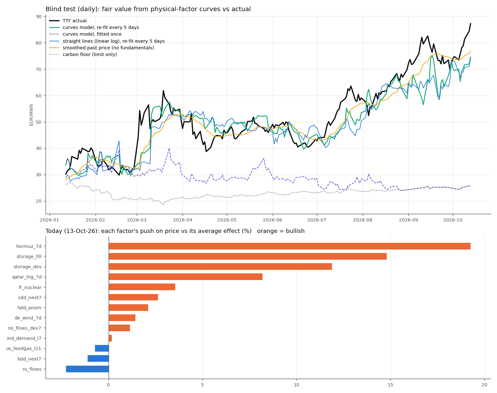
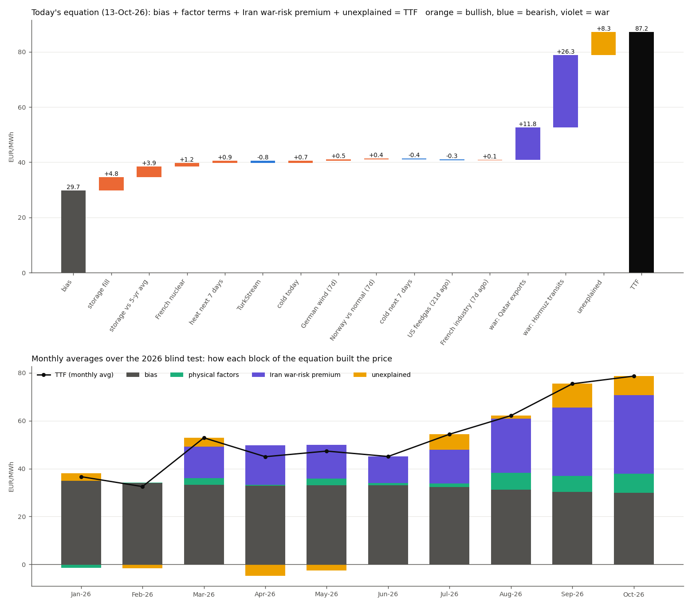
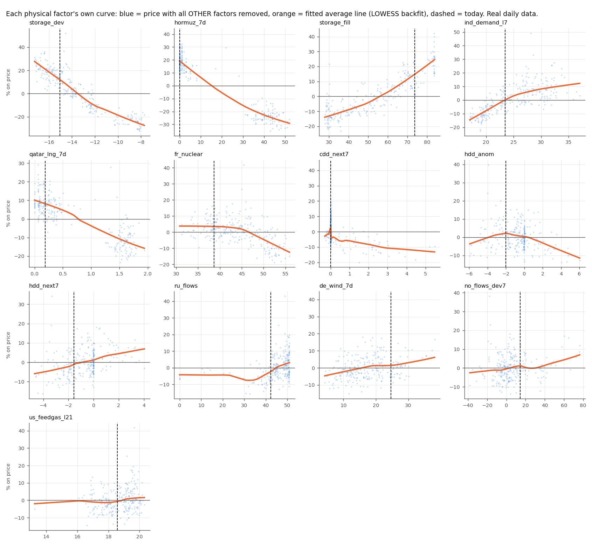
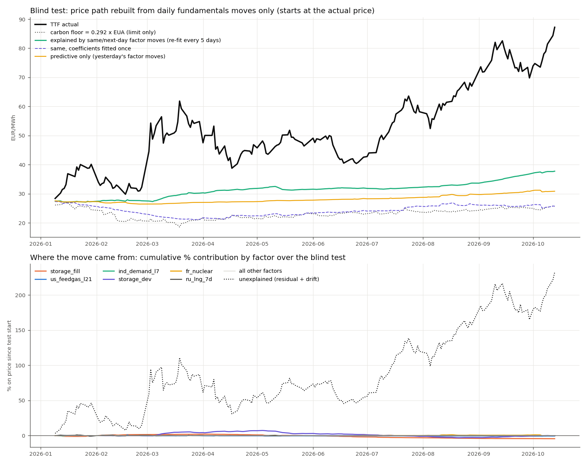

Dutch TTF front-month priced from physical fundamentals. Each factor has its own non-linear curve (the smoothed average line through price vs that factor, all other factors removed); the curves add up to a same-day fair value. Carbon acts only as a price floor. The 2026 premium is split into what the Hormuz / Qatar supply shock justifies and what is left unexplained.
Methodology — ln TTF = a + Σ fi(xi); each fi is a LOWESS curve fitted by backfitting, flat beyond the data. Smoothness and fitting window are chosen on validation inside training; curves are re-fitted every 5 trading days; the price is floored at 0.292 × EUA. Ranges come from out-of-sample errors only.

| Model | RMSE | MAE | Bias | R² levels | 20-day move corr. |
|---|---|---|---|---|---|
| Curves model, re-fit every 5 days | €6.78 | €5.18 | +2.07 | 0.76 | 0.61 |
| Straight lines, same factors, re-fit | €7.71 | €6.04 | +3.18 | 0.69 | 0.32 |
| Curves, fitted once (Jan 2026) | €28.46 | €23.75 | +23.35 | -3.26 | 0.22 |
| Smoothed past price (no fundamentals) | €5.12 | €3.95 | +2.04 | 0.86 | 0.65 |
| Yesterday's price (nowcast) | €2.57 | €1.89 | +0.31 | 0.97 | 0.94 |

| Term | €/MWh, 13 Oct | Share of TTF | |
|---|---|---|---|
| Bias — average fundamentals, no war | €29.70 | 34.0% | |
| Storage fill (current level) | Bullish | +€4.82 | 5.5% |
| Storage vs 5-yr avg | Bullish | +€3.93 | 4.5% |
| French nuclear | Bullish | +€1.22 | 1.4% |
| Heat: next-7-day CDD anomaly (realised, forecast proxy) | Bullish | +€0.91 | 1.0% |
| TurkStream flows | Bearish | −€0.80 | -0.9% |
| Cold: today's HDD anomaly | Bullish | +€0.73 | 0.8% |
| German wind, 7-day average | Bullish | +€0.50 | 0.6% |
| Norway flows vs seasonal normal (7-day) | Bullish | +€0.40 | 0.5% |
| Cold: next-7-day HDD anomaly (realised, forecast proxy) | Bearish | −€0.39 | -0.4% |
| US LNG feedgas, 21 days ago | Bearish | −€0.25 | -0.3% |
| French industrial gas demand, 7 days ago | Bullish | +€0.06 | 0.1% |
| = Fair value without the war | €40.83 | 46.8% | |
| Iran war risk: Hormuz LNG transits, trailing 7 days | War risk | +€26.30 | 30.1% |
| Iran war risk: Qatar LNG exports, trailing 7 days | War risk | +€11.77 | 13.5% |
| = Fundamental fair value | €78.90 | 90.5% | |
| Unexplained | Bullish | +€8.33 | 9.5% |
| = TTF | €87.22 | 100.0% |
| Month (average) | TTF | Bias | Physical factors | Iran war risk | Unexplained |
|---|---|---|---|---|---|
| Jan 2026 | 36.6 | 35.0 | -1.4 | +0.0 | +3.1 |
| Feb 2026 | 32.5 | 34.1 | +0.1 | +0.1 | -1.7 |
| Mar 2026 | 52.9 | 33.2 | +2.8 | +13.2 | +3.7 |
| Apr 2026 | 45.0 | 32.9 | +0.4 | +16.5 | -4.8 |
| May 2026 | 47.3 | 33.0 | +2.8 | +14.0 | -2.5 |
| Jun 2026 | 45.1 | 33.1 | +0.8 | +11.2 | -0.1 |
| Jul 2026 | 54.4 | 32.4 | +1.5 | +14.0 | +6.5 |
| Aug 2026 | 62.1 | 31.2 | +6.9 | +22.7 | +1.3 |
| Sep 2026 | 75.4 | 30.3 | +6.6 | +28.6 | +10.0 |
| Oct 2026 | 78.6 | 29.9 | +8.0 | +32.9 | +7.9 |

| Factor | Today | Level | Push today | Curve range | Shape p10 / p50 / p90 | Caveat |
|---|---|---|---|---|---|---|
| Storage vs 5-yr avg | Bullish | -15.03 pp | +11.9% | 76% | +22% @ -16.4 / +4% @ -13.9 / -25% @ -8.47 | — |
| Hormuz LNG transits, trailing 7 days | Bullish | 0.00 vessels | +19.3% | 68% | +19% @ 0 / +17% @ 2 / -25% @ 44 | — |
| Storage fill (current level) | Bullish | 73.76 % | +14.8% | 45% | -13% @ 29.6 / -2% @ 53 / +22% @ 81.6 | ⚑ Slopes up: fill rose through the 2026 rally (seasonal coincidence, kept at trader request) |
| French industrial gas demand, 7 days ago | Neutral | 23.49 mcm/d | +0.2% | 31% | -10% @ 19.1 / +2% @ 24.3 / +9% @ 31.2 | — |
| Qatar LNG exports, trailing 7 days | Bullish | 0.19 Mt | +8.2% | 31% | +9% @ 0.0651 / +7% @ 0.347 / -13% @ 1.65 | — |
| French nuclear | Bullish | 38.65 GW | +3.6% | 19% | +4% @ 37 / +3% @ 43.5 / -7% @ 52 | — |
| Heat: next-7-day CDD anomaly (realised, forecast proxy) | Bullish | 0.00 CDD/day | +2.6% | 18% | +2% @ -0.00634 / +3% @ 0 / -8% @ 1.74 | ⚑ Spike at zero: most days have no cooling demand |
| Cold: today's HDD anomaly | Bullish | -2.00 HDD/day | +2.1% | 15% | +1% @ -3.47 / +1% @ -0.447 / -2% @ 1.37 | — |
| Cold: next-7-day HDD anomaly (realised, forecast proxy) | Bearish | -1.56 HDD/day | -1.1% | 14% | -3% @ -2.82 / +1% @ -0.406 / +4% @ 1.13 | ⚑ Uses realised next-7-day temperatures (forecast proxy, look-ahead) |
| TurkStream flows | Bearish | 42.42 mcm/d | -2.3% | 12% | -6% @ 37.1 / +1% @ 46.6 / +3% @ 50.8 | — |
| German wind, 7-day average | Bullish | 24.70 GW | +1.4% | 11% | -3% @ 8.95 / +0% @ 16.8 / +2% @ 26.8 | ⚑ Slopes the wrong way and validation prefers dropping it (kept at trader request) |
| Norway flows vs seasonal normal (7-day) | Bullish | 14.25 mcm/d | +1.1% | 10% | -1% @ -12 / -0% @ 2.99 / +1% @ 34.9 | ⚑ Small and slopes slightly the wrong way above normal |
| US LNG feedgas, 21 days ago | Neutral | 18.56 Bcf/d | -0.7% | 4% | -1% @ 17.1 / +0% @ 18.9 / +1% @ 19.8 | — |

TTF trades +€8.3 vs fundamental fair value (€78.9), inside the 95% range €65–106 but in its upper half.
Of the €46.4 premium over a no-war market, €38.1 is the Iran war-risk premium (Hormuz / Qatar curves) and €8.3 is unexplained (positioning, escalation risk, winter risk on low storage).
Storage vs 5-yr avg has the widest curve (76% across its range) and pushes today's price +11.9%.
Curves beat straight lines (€6.8 vs €7.7) but not a smoothed recent price (€5.1); use the fair value as an anchor, not as a tracker.
Storage fill and German wind slope the wrong way (2026 seasonal coincidence) and are kept at trader request; backfitting is unstable on windows longer than ~1 year (correlated factors), hence the 250-day window; weather uses realised temperatures.